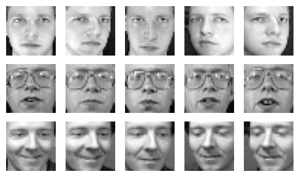

%matplotlib inline
import matplotlib.pyplot as plt
import seaborn as sns
import numpy as np
import pandas as pd
from PIL import ImageEigenFace
PCA
SVD
This notebook will dive into eigenvalues and eigenvectors with covariance matrix. We also compare this method with SVD to understand what happens under the hood.
Import packages
Load data
X_train = np.loadtxt('../../../data/faces_train.txt')
y_train = np.loadtxt('../../../data/faces_train_labels.txt')
X_train.shape, y_train.shape((280, 1024), (280,))X_test = np.loadtxt('../../../data/faces_test.txt')
y_test= np.loadtxt('../../../data/faces_test_labels.txt')
X_test.shape, y_test.shape((120, 1024), (120,))Understand the data
sample = X_train[0]
sample.shape(1024,)X_train.shape[0] / 407.0X_test.shape[0] / 403.0Define a function to convert the data to image array and display the face images.
def show_images(arr, num_person, num_faces):
data = arr[:num_person*10]
fig, axs = plt.subplots(num_person, num_faces, figsize=(num_faces, num_person))
flat_axs = axs.flatten()
for i in range(num_person):
for j in range(num_faces):
flat_axs[i*num_faces+j].imshow(arr[i * int(arr.shape[0] / 40) + j].reshape(32, 32).T)
flat_axs[i*num_faces+j].axis('off')
plt.set_cmap('gray')
plt.tight_layout()
plt.show()show_images(X_train, 3, 5)
Show mean face
def show_image(data):
fig, ax = plt.subplots(figsize=(1,1))
ax.imshow(data.reshape(32, 32).T)
ax.axis('off')
plt.set_cmap('gray')
plt.tight_layout()
plt.show()mean = X_train.mean(0) # shape (1024,)
show_image(mean)
Perform PCA from covariance matrix
Compute eigenvalues and eigenvectors of covariance matrix
def pca(data):
mean = data.mean(0) # shape (1024,)
Z = data - mean
S = Z.T @ Z
eigenvals, eigenvecs = np.linalg.eigh(S) # the eigen values are sorted from smallest to largest
reversed_idx = np.argsort(-eigenvals) # get the reversed indices from the largest to smallest
eigenvals = eigenvals[reversed_idx]
eigenvecs = eigenvecs[:, reversed_idx]
return eigenvals, eigenvecs%%time
eigen_vals, eigen_vecs = pca(X_train)CPU times: user 1.15 s, sys: 63.9 ms, total: 1.21 s
Wall time: 174 mseigen_vals.shape, eigen_vecs.shape((1024,), (1024, 1024))eigen_valsarray([ 7.59100215e+07, 4.19397005e+07, 2.54955933e+07, ...,
-5.02190332e-09, -7.09703055e-09, -7.63365465e-09])eigen_vecs[:5]array([[-0.01287756, -0.05501646, 0.0041873 , ..., 0. ,
0. , 0. ],
[-0.01462181, -0.06097046, -0.00761386, ..., 0.04503731,
0.06237077, 0.21112058],
[-0.01704114, -0.06917858, -0.01997429, ..., 0.08273158,
0.36417853, 0.14920292],
[-0.02048617, -0.07692255, -0.02277752, ..., -0.04538269,
-0.0119913 , -0.37879662],
[-0.02213695, -0.07991882, -0.02080318, ..., 0.02432163,
0.13519464, 0.02273907]])Show top 5 eigenfaces
def show_pc_images(data):
nrows, ncols = data.shape
fig, axs = plt.subplots(1, ncols, figsize=(ncols, 1.5))
flat_axs = axs.flatten()
for i in range(ncols):
flat_axs[i].imshow(data[:, i].reshape(32, 32).T)
flat_axs[i].axis('off')
flat_axs[i].set_title(f'pc{i}')
plt.set_cmap('gray')
plt.tight_layout()
plt.show()show_pc_images(eigen_vecs[:, :5])Perform PCA with SVD
def svd(data):
data_centered = data - data.mean(0)
U, s, Vt = np.linalg.svd(data_centered)
return U, s, Vt.T%%time
U, s, V = svd(X_train)CPU times: user 837 ms, sys: 26.8 ms, total: 864 ms
Wall time: 124 msU.shape, s.shape, V.shape((280, 280), (280,), (1024, 1024))
Note
V is the same as the eigen vector matrix, and \(s^2\) is equal to the corresponding eigen values.
Check if the top 5 eigenvalues are equal
np.square(s[:5]), eigen_vals[:5](array([75910021.54729882, 41939700.47489863, 25495593.34635307,
17539063.72985784, 12170662.99105223]),
array([75910021.54729888, 41939700.47489879, 25495593.34635304,
17539063.72985789, 12170662.99105226]))np.allclose(np.square(s[:5]), eigen_vals[:5])TrueCheck if the top 5 eigenvectors are equal
V[:, :5], eigen_vecs[:, :5](array([[-0.01287756, 0.05501646, 0.0041873 , 0.00651911, 0.0704008 ],
[-0.01462181, 0.06097046, -0.00761386, 0.00091407, 0.07140231],
[-0.01704114, 0.06917858, -0.01997429, -0.00113944, 0.0715405 ],
...,
[ 0.00308199, -0.04617929, -0.03671734, 0.03130467, 0.07777847],
[ 0.00747202, -0.0494147 , -0.04110058, 0.03836678, 0.07902728],
[ 0.0109414 , -0.05125083, -0.03781413, 0.04223883, 0.07396954]]),
array([[-0.01287756, -0.05501646, 0.0041873 , -0.00651911, 0.0704008 ],
[-0.01462181, -0.06097046, -0.00761386, -0.00091407, 0.07140231],
[-0.01704114, -0.06917858, -0.01997429, 0.00113944, 0.0715405 ],
...,
[ 0.00308199, 0.04617929, -0.03671734, -0.03130467, 0.07777847],
[ 0.00747202, 0.0494147 , -0.04110058, -0.03836678, 0.07902728],
[ 0.0109414 , 0.05125083, -0.03781413, -0.04223883, 0.07396954]]))
Tip
Since eigenvectors can be same values, but with opposite signs, we compare the absolute values.
np.allclose(np.abs(V[:, :5]), np.abs(eigen_vecs[:, :5]))TrueShow top 5 eigenfaces
show_pc_images(V[:, :5])
Projecting 3 persons’ faces data down to 2 dimensions and plot them.
T = X_train[:7*3, :] @ V[:, :2]
T.shape(21, 2)y = y_train[:7*3].reshape(-1, 1)
y.shape(21, 1)data_2d = pd.DataFrame(data=np.concatenate((T, y), axis=1), columns=['pc1', 'pc2', 'person'])
data_2d.head()| pc1 | pc2 | person | |
|---|---|---|---|
| 0 | -4907.496730 | 458.054067 | 1.0 |
| 1 | -4344.197376 | 1289.734627 | 1.0 |
| 2 | -4775.345055 | 577.090674 | 1.0 |
| 3 | -4492.115417 | -930.775823 | 1.0 |
| 4 | -4639.398032 | 840.018975 | 1.0 |
fig, ax = plt.subplots(figsize=(8, 5))
sns.scatterplot(data=data_2d, x='pc1', y='pc2', hue='person', palette=['blue', 'red', 'green'], ax=ax)
plt.show()The above plot shows that the data is separable.
Explained variance ratio
s.shape(280,)s_norm = s / s.sum()
plt.plot(np.cumsum(s_norm))
plt.xlabel('singular values')
plt.ylabel('cumulative sum')
plt.xlim(0, 280)
plt.ylim(0, 1)
plt.show()Reconstruct face from top principle components
Original face
picked_face = X_train[0]
show_image(picked_face)Reconstruct_face method 1
k = 20 # the kth eigenvectorreconstruct_face1 = (picked_face - mean) @ eigen_vecs[:, :k] @ eigen_vecs[:, :k].T + mean
show_image(reconstruct_face1)
Reconstruct_face method 2
S = np.diag(s)
S.shape(280, 280)reconstruct_face2 = U[0, :k] @ S[:k, :k] @ (V.T)[:k, :] + mean
reconstruct_face2.shape(1024,)show_image(reconstruct_face2)Confirm the two reconstruct_faces are the same
np.allclose(reconstruct_face1, reconstruct_face2)True